What sets shoebox apart
Four things that make it different from other photo managers.
-
Your photos stay yours
shoebox has no import and no library of its own that your photos get locked into. Your folders stay exactly as you made them, and your files are never written to: tags, dates and places live in its own index. A file changes only when you move, rename or trash it, or turn a JPEG. See “Your photos are safe”.
-
Lives on your drive, and stays small
Everything shoebox stores sits in one hidden
.shoeboxfolder next to your photos, so it comes along when you plug the drive into another computer. It adds under 1 GB for 80 GB of photos (about 1 %), measured on a real library of 31 GB, face recognition data included. Reading the words in your photos adds about 25 MB for 100 GB of photos (estimated; a drive full of scanned documents needs more). -
Made for the file manager
You organise in Finder or File Explorer and a quick scan picks the changes up. Folders count as tags.
-
Local recognition, optional maps
Faces, cats and dogs are recognised on your own computer, and maps are off until you switch them on. No cloud, no account.
What shoebox can do
One page in your browser, a timeline of everything on the drive.
-
Scan
With Scan, shoebox indexes your photos and collects what a photo app needs, such as dates, sizes and places. Later scans only look at what changed.
-
Duplicates
Finds identical, resized, edited and look-alike photos. You review; the best copy always stays.
-
Several drives
Browse several drives in one common timeline. Backups are recognised and checked.
-
Safe trash
Deleted photos go to a trash on the drive. Put them back, or delete them for good.
-
Move & organise
Move photos to a folder (created if needed). RAW, Live Photo and sidecar files travel along.
-
Tags
Your own tags on many photos at once. Folders count as tags too. Stored in the index, never in the photos.
-
Collect & export
Gather photos for a print order, an album or a birthday video with one click, then copy them into a numbered folder on your computer or a USB stick. Your originals stay as they are.
-
Timeline
All photos and videos by month, with a year jump, a folder tree and a viewer with full-size info. A photo can have a date of your own.
-
Search & filter
Type a person, pet, tag, folder or a date such as June 1987 and combine them as chips. Find words inside photos with
text:and file names withname:, filter by type, or show only your favorites ♥. -
People & pets
Optional recognition groups faces, cats and dogs. You name them; shoebox suggests the rest.
-
Locations
Optional maps, off by default: a map in the info of photos with GPS data, a world map of all your photos, and named places like “Home” that collect their photos by themselves.
The screen at a glance
Everything is on one page. Here is where things are.
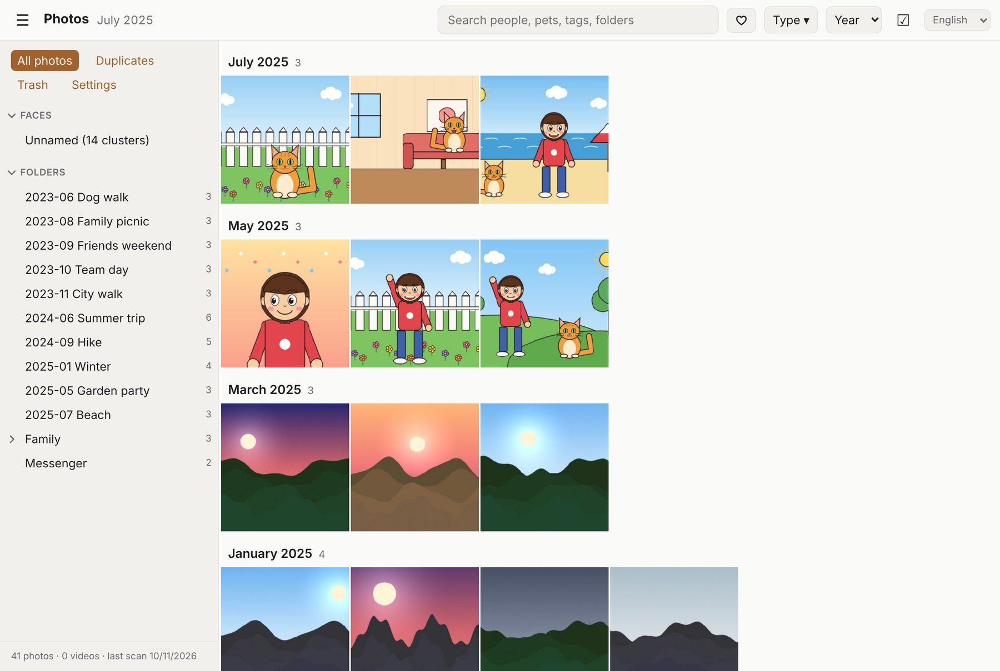
1 2 3 4 5 6 7 8 9 10 11-
Folders menu
☰ shows or hides the sidebar on narrow screens.
-
Search box
People, pets, tags, folders and dates; pick several to combine them.
-
Favorites ♥
Show only the photos you have hearted. Also found by typing favorite in the search box.
-
Hide from the timeline
Keep some photos or whole folders out of the timeline you show to others. Find them again with the Hidden chip.
-
Type
Tick what to show (Photos, Videos, Live Photos, Screenshots); nothing ticked shows everything. What you tick also appears as a chip above the photos. See “Find and organise”.
-
Year
Jump straight to a year.
-
Select ☑
Pick photos to move, tag or trash.
-
Quick links
All photos · Needs a date (only when some photos have none) · Duplicates · Trash · Settings.
-
Folders
Your folders, with counts. Tags, Faces and Drives appear here when you have them, and so does Locations when maps are on.
-
Timeline
Months with counts. Click a photo to open the viewer.
-
Language
Switch English / German.
-
Status
Scan, thumbnail and drive status at the bottom of the sidebar; it stays in view while the sidebar scrolls.
A typical session
Plug in the drive and double-click Start shoebox. Scan and open the photo app. To add the photos of an event, copy their folder onto the drive in Finder (named like 2025-08 Holiday) and Scan again. Then tag and sort. Look at Duplicates now and then, and run the Backup check after every backup.
Finding your way around
The top bar and the sidebar: where you are, and what folds.
Where you are
The top bar names where you are. Next to the drive name it shows the month you are looking at on the timeline (the Year menu jumps to a year) and, on any other page (Duplicates, Trash, Settings, Faces, Unnamed, …), the name of that page.

Fold what you do not need
The sections Faces, Tags, Folders and Locations fold with their arrow or by clicking the title (Faces and Locations also open their page). A section that holds your current choice stays open.
Folders
The Folders section mirrors the folders on your drive, with their counts. Click one to see only its photos. Rename or move a folder from its chip above the photos. The eye next to the pencil hides the folder from the timeline, or shows it again; right-click on a folder in the sidebar does the same.
Get started in three steps
macOS (Intel, 10.13 or newer, and Apple Silicon) and Windows 10 or 11 (64-bit, Intel or AMD). Nothing to install to browse and scan; face, pet and text recognition are add-ons you install from the Control Panel.
-
Unpack it and choose where it lives
Unpack shoebox-macos.tar.gz from the release (double-click it in Finder). You get one folder, shoebox-macos (the name says which system it is for), with three things in it: Start shoebox.command, which starts shoebox; this guide in guide; and the folder program with everything else: the program shoebox, the two files it reads HEIC photos with (libheif.1.dylib and libde265.0.dylib), the folder recognizer (the add-ons installer), the source code of those two libraries in sources, and the licences. You never need to open program. Keep the folder together; never pull single files out of it: the program does not start without its two libraries next to it.
On Windows the download is shoebox-windows.zip: right-click it, choose Extract All, and you get the folder shoebox-windows with the same three things: Start shoebox.bat, guide and program (there the program is shoebox.exe, its two files are heif.dll and libde265.dll). Everything in this guide works the same way; a drive is a letter such as
E:\instead of/Volumes/MyDrive.Then pick one of two ways:
On the drive (best if you take the drive to other computers): copy the whole folder shoebox-macos into the top folder of your photo drive, next to your photo folders, so you have
/Volumes/MyDrive/shoebox-macos/. Do not create a .shoebox folder yourself: shoebox makes it on the drive at the first scan. Add-ons you install later are stored inshoebox-macos/program/recognizeron the drive and travel with it.On your computer: move the whole unpacked folder shoebox-macos somewhere you will keep it (Documents, for example, not Downloads) and leave its files together, but not in a folder a cloud service keeps in sync (iCloud Drive, OneDrive, Dropbox, Google Drive): the add-ons cannot be installed there. Windows often keeps Documents and the Desktop in OneDrive, so on Windows
C:\shoeboxis a good place. Open it from there whichever drives you plug in; add-ons are installed once into its folder program/recognizer and used for every drive. The library index (a hidden .shoebox folder) is on each drive in both ways. -
Start the Control Panel
Double-click Start shoebox.command (on the drive, or in the folder on your computer). A Terminal window opens (leave it open) and the Control Panel appears in your browser. The first time after a download, macOS may refuse to open it because it cannot check it for malicious software: open System Settings → Privacy & Security, scroll down to the line about Start shoebox.command and press Open Anyway (before macOS 15: right-click the file and choose Open). Always start shoebox with this file, not with shoebox inside program: it first takes the download mark off the program and its two libraries, which macOS would block otherwise.
On Windows double-click Start shoebox.bat. A black window opens (leave it open) and the Control Panel appears in your browser. If Windows shows Windows protected your PC, click More info, then Run anyway: shoebox is not signed with a paid certificate, so Windows does not know it yet.
-
Add-ons, scan, then open
Only if you want people, pets or the words in your photos recognized: in step 1, Add-ons, tick what you want (Faces, Pets, Text, or any mix; each works without the others) and press Install the selected add-ons. The Control Panel lists what is downloaded: the Python and OpenCV program (about 200 MB, once, for all add-ons), Faces (about 40 MB), Pets (about 140 MB) and Text (about 100 MB). Internet needed, a few minutes. Python and OpenCV is always installed with the first add-on (its box is ticked and cannot be unticked). Until an add-on is installed, its recognize button stays grey and says why. The Control Panel looks at the recognizer folder each time you open it or come back to its window, so a new download shows everything as not installed until you install it, and an install that stopped half way does not count as installed.
Then add your photos: press Choose… and pick the folder, or type its path (for example
/Volumes/MyDrive/Photos, on WindowsE:\Photos) and press Enter. A click on a detected drive starts the path in the box for you to finish (Enter alone adds the whole drive), and a double-click on a folder in the list lets you change its path. Then press Scan, then Start photo app; while the app starts, the button is grey with a moving line along its bottom edge until the photo app opens in a new browser tab. The Control Panel remembers the drives you ticked last time; if one of them is not plugged in, its chip is dashed and Start photo app stays off, with the reason in red, until you plug it in or untick it. This works on Windows too (E:\Photosande:/Photosare the same place). A drive at the top ofE:\is called by its name in Explorer (orE:if it has none), as on a Mac.Photos on a server, or a folder you only want to look at? Open the tab Add a folder or server, press Choose… or type the path (for example
\\server\share\Photosor/Volumes/Server/Photos), choose Separate (next to the program) and press Add, then Scan as usual. Such a folder is listed under Libraries kept next to the program in the tab Photo folders and marked separate: its index is kept next to the program instead of inside the folder. shoebox walks through every subfolder, finds the photos and keeps its list in a folder libraries that appears next to the folder program (in your shoebox folder, never inside program, so a newer shoebox can replace program without losing it). Nothing is written into the folder, not even a .shoebox folder, and its photos can only be looked at, never moved, renamed or deleted (the photo app shows no Move, Rotate or trash buttons for it, and an export cannot save into it; tags, dates and names still work). The tab Manage libraries, which appears once there is one, lets you rename a library, point it to another folder (the index is kept), take it off the list, or delete its index (your tags, dates and names for it go with it; the photos are not touched). The first scan of a big server can take hours; you can cancel and continue later.The first scan reads every file once and takes a while on a big drive; later scans only look at what changed. When it finishes, the tabs Moved, Changed, Missing and Already on the drive (each with its count) list exactly which files they mean; for new files you already had, the tab shows the older copy right next to each one.
Text (reading the words in your photos: documents, screenshots, street signs, menus) works the same way and is explained in “Words in photos”: tick Text, install it, then press Recognize text in step 3. It only reads, it is slow, and you can cancel and continue later.
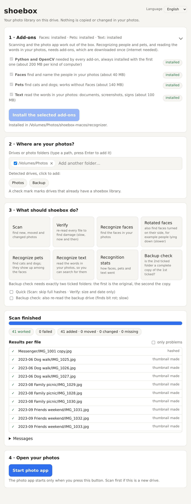
Control Panel tasks
- Scan find new, moved and changed photos. Fast: it only looks at what changed since the last scan. Run it after you move, rename or add photos.
- Verify
- check that nothing was lost or damaged. It re-reads every file and compares it with what the index remembers, which finds files that were silently damaged on the drive. Slow, so run it now and then (every few months, or before you rely on a backup), not after every move. Moves are not its business: a moved photo has its new place in the index and passes. A photo whose path is gone but whose content is still on the drive elsewhere (a duplicate you deleted) is listed as "relocated", not as a failure. Only content that is nowhere on the drive any more counts as missing. If files are gone, a button appears after the check (and after a scan) that forgets their records: they are removed from the shoebox index, its database on the drive. No photo file is touched.
- Recognize faces
- find the faces in your photos (and, with Recognize pets, cats and dogs). Needs the Faces add-on.
- Rotated faces
- also find faces turned on their side, for example people lying down (slower). Needs the Faces add-on.
- Recognize pets
- find cats and dogs; they show up among the faces. Needs the Pets add-on, not the Faces one.
- Recognize text read the words in your photos. Needs the Text add-on. See “Words in photos”.
- Recognition stats
- how faces, pets and text went: photos looked at, finds, people named, what is still to do. Only reads.
- Backup check
- is the 2nd folder a complete copy of the 1st?
Several computers and systems
- Where the add-ons are looked for: only in the recognizer folder next to the shoebox program you started. So a shoebox folder on your computer is used for every drive. Add-ons inside a drive's hidden
.shoeboxfolder are never started: a drive you got from somebody else could bring a program of its own. - Models and Python are different things. The models (Faces, Pets, Text) are the same on every computer. Python and OpenCV is built for one kind of computer: Intel Mac, Apple Silicon Mac, Linux, Windows. If you take a drive with shoebox-macos from an Intel MacBook to a newer one, step 1 shows Python and OpenCV: required on the newer one, your add-ons say models found, needs Python for this computer, and the recognize buttons are grey. Press Install the selected add-ons once there: only the missing Python is downloaded, the models are kept. Both kinds then live side by side in the same recognizer folder, and each computer uses its own.
- Text is read by one computer and used by all. The words are saved on the drive (in
.shoebox/recognition.db), not on the computer. If Recognize text is too slow or cannot run on an old Mac, press it on a newer computer with the same drive plugged in. The Text add-on installs two programs (onnxruntime and rapidocr) into the Python of the recognizer folder, so it is installed once on each kind of computer; its models are kept. - Mac and Windows on one drive: copy both folders to the drive's top folder:
shoebox-macosandshoebox-windows. Each has its own recognizer folder, so models you install in one are not shared with the other. Start shoebox from the folder of the system you are on. Both use the same hidden.shoeboxindex on the drive. The add-ons install on Windows too, with the same button: it needs Windows 10 or 11 on a 64-bit Intel or AMD processor and nothing else to be installed first.
Video previews and ffmpeg (optional)
Video previews need nothing extra. On a Mac, Scan makes them with macOS’s own video framework (the one QuickTime uses), for every video QuickTime can play. Where shoebox cannot make one (an older camcorder format, or on Linux), your browser picks a frame the first time the video is on screen, and shoebox keeps it in thumbs.db (the video itself is never changed). ffmpeg, a free tool that picks one frame out of a video, is optional. It helps when:
- on Linux, every video should have its preview right after Scan, not only once it has been on screen;
- your Mac and your browser cannot read some of your videos: older camcorder files such as
.avi,.mkv,.mtsor.mpg, or HEVC videos (the format of newer iPhones) on a Windows PC without Microsoft’s HEVC Video Extensions. ffmpeg has its own decoders and needs no add-on. It makes the preview only: such a video still plays only in a browser that can play it.
shoebox looks for it in the same folder as the shoebox program, the folder program (the file is called ffmpeg, or ffmpeg.exe on Windows) and then on your computer’s PATH, for example after brew install ffmpeg. Or download a static build (one single file) from ffmpeg.org/download and put it next to the program; it is optional and usually takes 50–100 MB. Which file to take:
- Mac: easiest is
brew install ffmpeg. Or open the page’s macOS link, download a static build, unzip it and put the fileffmpeginto the folder program, next to shoebox. Start shoebox.command takes the download mark off it, so macOS lets shoebox run it. - Windows: open the page’s Windows link and download the release essentials zip. Open it, go into its
binfolder and copyffmpeg.exe(only that file) into the folder program, next toshoebox.exe. - Linux:
sudo apt install ffmpeg, or the equivalent of your distribution.
Everything else works without ffmpeg. After you add it, run Scan: it makes the previews that are still missing and replaces the ones your browser made.
Good to know
- shoebox keeps everything in a hidden
.shoeboxfolder at the top of the drive: the librarylibrary.db(index, tags, names, decisions) with its backup copylibrary.db.bak, the previewsthumbs.db,recognition.dbif you use recognition and thetrash. That is why the drive can move to another computer. On a Mac the folder is hidden: press Cmd + Shift + . in Finder to see it. - Closing the Terminal window stops shoebox.
The app speaks English and German: pick the language at the bottom of the sidebar.
Browse and view
Scroll through the timeline, jump by year, open a photo.
Timeline
Photos are grouped by month, newest first. The Year menu jumps to a year, and the top bar always names the month you are in (see “Finding your way around”).
A small ~ in the corner of a photo marks a guessed date. How a photo gets its date is explained in “Dates and searching by date”.
Viewer and info panel
Click a photo to open it. ← and → step through the photos and Esc closes the viewer. ⓘ (or the key i) opens the info panel.
Videos start playing as soon as they open; p pauses them and plays them on. On a Live Photo, LIVE ▶ in the top bar (or p) plays its motion once; pressed again while it plays, it goes back to the still picture.
Some older camcorder formats (.avi, .mkv, .mpg, .mts) cannot be played by a browser, although Finder or Explorer plays them. The viewer then says so. Open the info panel, choose Show in Finder / Explorer and play the file in another program; shoebox never changes the video.
What the info panel holds
- Date, with its mark and a pencil to set your own (see “Dates and searching by date”).
- Drive (only when you use more than one drive), camera and size.
- Tags and Faces, each under its own heading, with a box around each face on the photo.
- Buttons to Show in Finder (Show in Explorer on Windows) and Copy path.
- GPS data at the bottom: where the photo was taken (see “Locations and maps”).

Favorites
The ♥ in the top bar of the viewer, or the key f, marks the photo as a favorite. In the timeline the same heart sits in the top right corner of each photo (it appears when you point at a photo; hearted photos always show it). Click it again to take it off. Under the hood a favorite is just your own tag favorite, kept in the index like any tag, never in the photo.
Hide from the timeline
The eye with a slash in the top bar of the viewer (key h) hides the photo from the timeline. Once it is hidden, the same button shows the eye without the slash and brings the photo back. In the selection bar the button Hide from timeline does the same for many photos at once. To hide a whole folder, right-click it in the sidebar (Hide folder from timeline) or press the eye in its chip above the photos, which is also the way on the iPad. Everything in the folder and below it is hidden, also photos you copy there later. A hidden folder stays in the sidebar, dimmed, and a click on it shows its photos.
Hidden photos are left out wherever you look at photos, with every filter: the timeline, a person, a date, a place, a tag, and the counts agree. To see them, pick Hidden in the search suggestions (or type hidden, versteckt, verborgen or ausgeblendet). Together with other chips it finds, for example, the hidden photos of one person. Pages for looking after your library, such as Duplicates, the face checks and the Trash, show everything. In All drives the same rules apply: each drive keeps its own hidden photos and folders.
This is tidiness, not privacy. It only keeps photos out of the timeline you may show to others; the files stay where they are on the drive, and shoebox does not lock them (a password on the drive does that). A hidden photo is your own tag hidden and a hidden folder a flag in the index; nothing is written into a photo or a folder. Typing hidden or versteckt as a tag hides the photo and says so, it does not make a tag. A photo moved into a hidden folder is hidden, moved out of it it shows again. The Export… button next to a tag chip is not offered while the Hidden chip is on; select the hidden photos and use Export… in the bar instead.
Rotate
r turns left, Shift+R right. For JPEGs this changes only the two bytes of the rotation flag; for other formats, and for a JPEG that has no rotation flag (often scans), the turn exists in shoebox only. The small picture in the grid follows about a second after your last turn, so turning a photo two or three times makes it only once.
Keyboard in the viewer
- ← →
- previous / next
- i
- show / hide the info panel
- Space
- open / close the viewer (on a photo picked with the arrow keys), also on a video: to pause one, press p
- p
- video: pause / play; Live Photo: play its motion / back to the still picture
- f
- add to / remove from favorites
- h
- hide from / show in the timeline
- t
- add a tag: opens the info panel and the tag field with its list; the arrow keys pick a tag, Enter adds it; Esc closes the list, a second Esc leaves the field
- w
- recognized text (words): outline the lines and show the list / hide them (only on photos that have text)
- r · Shift+R
- rotate left / right
- Esc
- close the viewer
Find and organise
Search, select, tag and move: all of it works on many photos at once.
Search
Click the search box (on any page) and start typing, or just click to see what you can pick. While the list is still being worked out, grey placeholder rows show that it is on its way. Suggestions appear in groups, for example Tags, People, Groups and Folders (and your places when maps are on, see “Locations and maps”). Pick one and the list closes and it becomes a chip above the photos. In All drives the numbers next to the suggestions count only the photos that fit the chips you already have, just as on a single drive.
Combine chips
All chips must match, so every chip you add narrows the result: a person, a tag and a year together show only the photos that fit all three. × removes a chip, Clear all starts over. A group chip is the one exception inside itself: it shows the photos of anyone in the group (see “Several faces in a photo, and groups”), and then narrows like any other chip.
At the right of the chips shoebox shows how many it finds, for example 48 photos · 3 videos. With nothing found it says No photos, and the page reads Nothing here. The search found no matches.
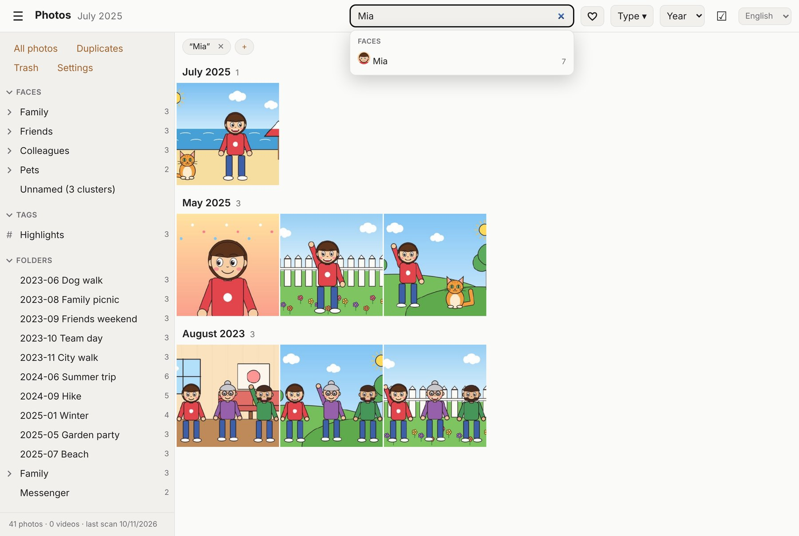
What you can search for
| You type | You get | It finds |
|---|---|---|
Mia | Mia✕ | A person or a pet. Names work like tags, and so do kinds such as “cats”. |
Holiday | # Holiday✕ | Photos with that tag. A folder name is offered under Folders; Tags lists only tags you gave by hand, including those that share a folder’s name. |
June 1987 | June 1987✕ | Photos from that year, month or day. See “Dates and searching by date”. |
text:Rechnung | Rechnung✕ | Words written inside photos. See “Words in photos”. |
name:IMG_20 | IMG_20✕ | File names. |
favorite | ♥ Favorites✕ | Your favorites. The ♥ button next to Type does the same. It combines with everything else, for example the favorites of one person or one year. |
hidden | Hidden✕ | The photos you hid from the timeline; versteckt, verborgen and ausgeblendet find the same. It combines with everything else, for example the hidden photos of one person. |
Home | Home✕ | Photos taken in a named place (maps on). See “Locations and maps”. |
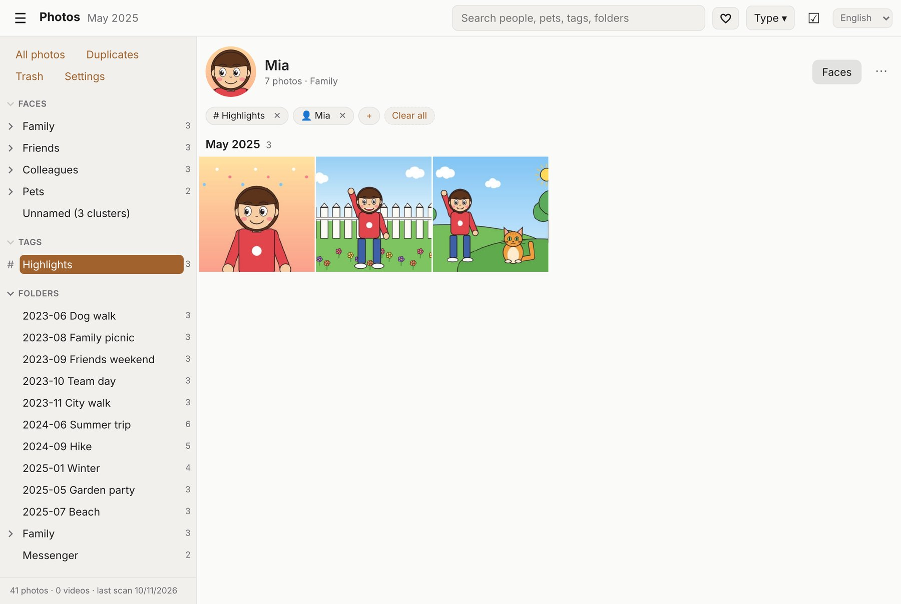
Type: photos, videos, Live Photos, screenshots
Type narrows the timeline to one kind of picture. Tick any of them; nothing ticked shows everything.
Every picture is exactly one of the four, so Photos and Live Photos never overlap: tick both to see all your photos.
What you tick
What you tick also appears as a chip with the type’s icon (four squares when several are ticked); its × clears the filter, and so does Clear all. To leave screenshots out of the timeline, tick Photos, Videos and Live Photos but not Screenshots; to see only screenshots, tick just Screenshots.
When shoebox guesses wrong
Shoebox recognises a screenshot from the file (no camera data, a name like Screenshot or Bildschirmfoto, above all exactly the size of a phone or computer screen, as PNG or as JPEG) and from the picture itself (large areas of one colour). It can be wrong in both directions: in the photo’s info panel, Screenshot is a drop-down that starts on shoebox’s guess; pick Yes or No to correct it, and the undo icon at the right of the row (tooltip Back to automatic) returns to the guess. Your choice is kept in the library; the photo file is never changed.
Select
Press ☑, then click photos (Shift-click for a range; on the iPad just tap). With the mouse you can also hold the button down and drag a rectangle over photos, as in Finder: only the photos the rectangle touches change, and a drag that starts on an unselected photo selects them, one that starts on a selected photo deselects them; photos the rectangle leaves again go back to what they were, and near the top or bottom edge the timeline scrolls along. “Select all” on a month heading takes the whole month; Select all in the bar at the bottom takes every photo shown, across all months (for example all photos of a tag, to remove that tag from them at once).
The selection belongs to the list it was made in: clicking another tag, folder or page in the sidebar, or a search, ends it; if photos are selected, shoebox asks first, when you click the page or the search box (Stay or Leave and drop selection / Search and drop selection).
The bar at the bottom works on the selection. On the left, ✕ ends the selection (so does Esc), then come the number of photos selected and Select all. The tools follow as icons; point at one and its name appears above it:
- Add tag… and Remove tag…
- Set date… (see “Dates and searching by date”)
- Set location…: one location for all of them (see “Give a photo a location”)
- Move… and Export…
- Hide from timeline; with all the selected photos hidden already it shows the eye without the slash and says Show in timeline
- Move to trash, in red, if you allowed it
With the keyboard, pick photos with the arrow keys and Space, then press B to go to the bar (and B again to go back to the photo). In the bar the arrow keys go from tool to tool; Enter or Space opens one, and when its dialog closes you are back on the tool. On the iPad the bar shows the icons only; each opens a dialog that says what it does, so a wrong tap costs one Cancel.
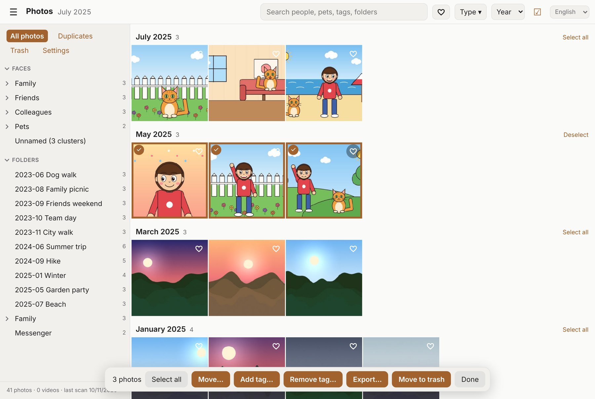
Tag
Add tag… puts your own tag on the selection. Tags live in shoebox’s index, never in the photo files. In the tag field the tags you used last come first (Recently used), then the Most used; typing narrows the list and keeps recent tags on top. Shoebox remembers this in the drive’s index (never in the photo files), so it is the same on every computer and tablet.
For the photo open in the viewer, + Tag in the info panel adds a tag, and so does the key t (it opens the info panel if needed): the same list appears, ↑ and ↓ pick a tag, Enter adds it, or type a new name.
Tags that are also folder names
A tag can also be a folder name (the folder “Justin” gives all its photos the tag “Justin”, and you may have given it by hand to others). Under such a tag in the sidebar, while it is the one shown, a row Manual tags only appears with the number of photos you tagged yourself; click it to see just those (the tag then shows in orange text, and its chip says “manual”). Click the tag itself to see all of its photos again.
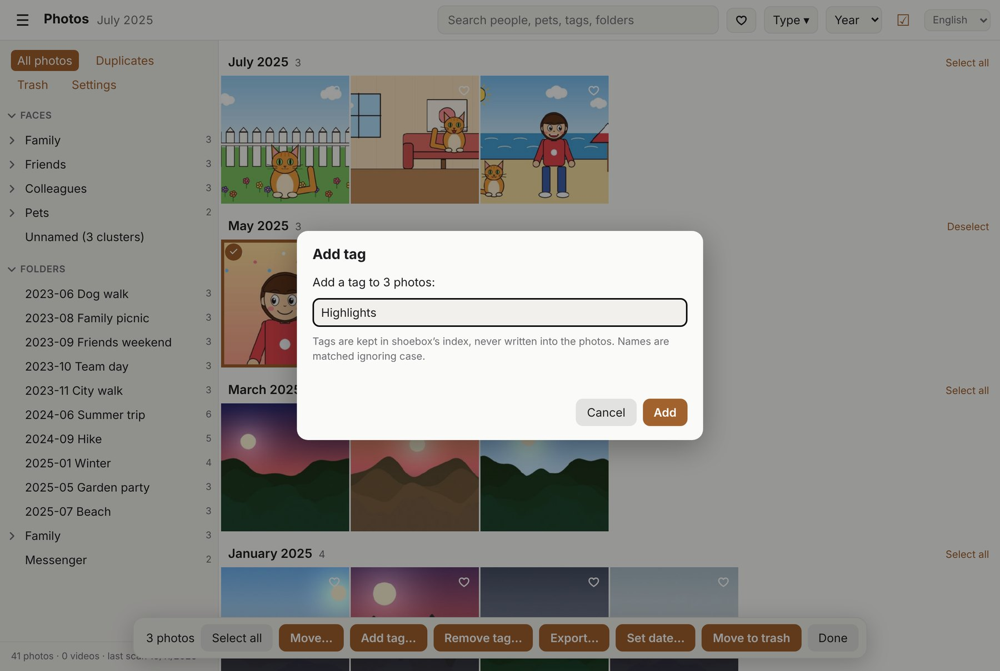
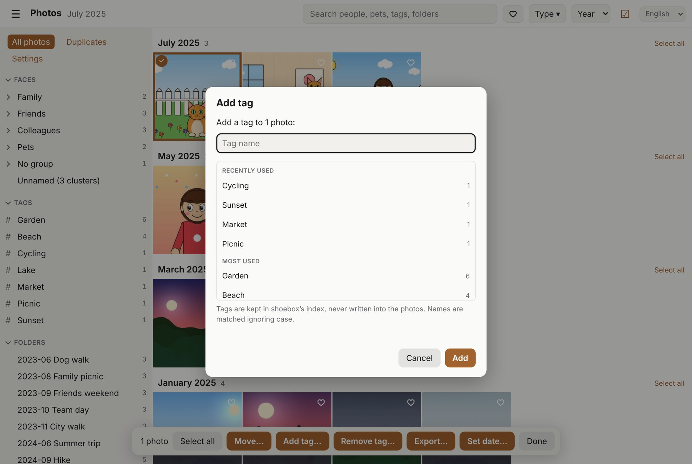
Collect: a quick tag
Collecting is a quick tag for gathering photos for something: a print order, an album in InDesign, a video for a birthday. In Settings → Collection type the name of that tag, for example print-march.
A bookmark button then appears in the photo view. One click, or the key C, puts the tag on the photo and the bookmark turns filled ; the next click takes the tag off again. Hover over the button to see which tag it uses. Leave the setting empty and the button is gone.
You can collect over several sessions: search for the tag to see what you have, then Export… it (see below).
Move
Move… asks for a folder. New folders are created, nothing is ever overwritten, and RAW, Live Photo and sidecar files move along. The photos’ own tags always go with them. “Keep folder tags” also keeps the old folder’s tags as own tags; folder tags always follow the new folder.
Cleanup of empty folders
If a folder is empty after the move (nothing left in it but the leftovers your computer keeps there, such as .DS_Store or Thumbs.db), shoebox removes that empty folder and tells you which one. A folder that still holds anything else, a subfolder included, stays.
Folder names that work on every computer
A drive moves between Mac, Windows and Linux, so Move… only accepts folder names all three can open. Avoid:
/ \ : * ? " < > |in a name. On a Mac, Finder shows a:as/, so a folder you see as “09/10 Exchange” is really called09:10 Exchangeand is refused. Rename it in Finder, for example to09-10 Exchange.- a dot at the start or end of a name, as in
Flight N.Y.. - names Windows reserves, such as
CON,NULorCOM1.
Spaces, underscores, hyphens, ß and umlauts are fine. To fix an existing folder, rename it in Finder or File Explorer and scan again; until then you cannot move photos into it.
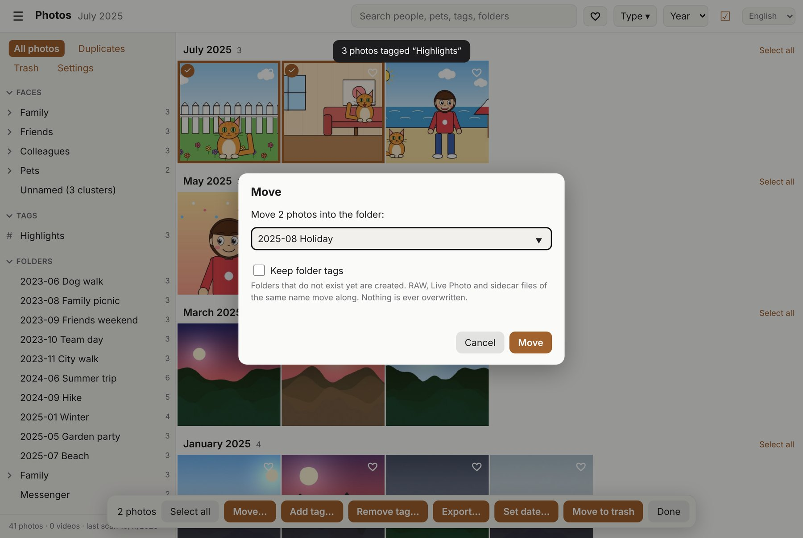
Export
Press Export… to copy photos into a folder of your own, for example what you collected: in the bar at the bottom for the selected photos, or, when a tag is in the search, next to its chip for everything shown. The dialog asks where to save (Choose… opens a list of your folders and drives; Downloads is the first place) and how to call the new folder. From a tag the name is the tag’s name; from a selection you type one.
Inside you get copies named 001_IMG_3457.jpg, 002_… in the order of the capture dates (Settings → Export switches the numbers off).
Convert HEIC to JPEG is for print shops and programs that cannot read HEIC; the JPEG keeps the capture date and the camera data. For photos that have a RAW file, or the video of a Live Photo, a tick box takes those along. Videos are copied as they are.
Exporting again
Exporting again into the same folder only adds what is new: a file that is already there (same name without the number, same size) is skipped, and the numbers of the others are changed to the new order. Nothing in the folder is ever deleted.
If you choose a drive that has a shoebox library of its own, shoebox asks first, because that drive’s next scan will find the copies and add them as new photos without their tags. After that scan, Carry over data… on Manage drives brings the tags, hearts, people, dates and places over.
Every original is read under the same check as a scan and every copy is compared with it afterwards; the originals are never changed.
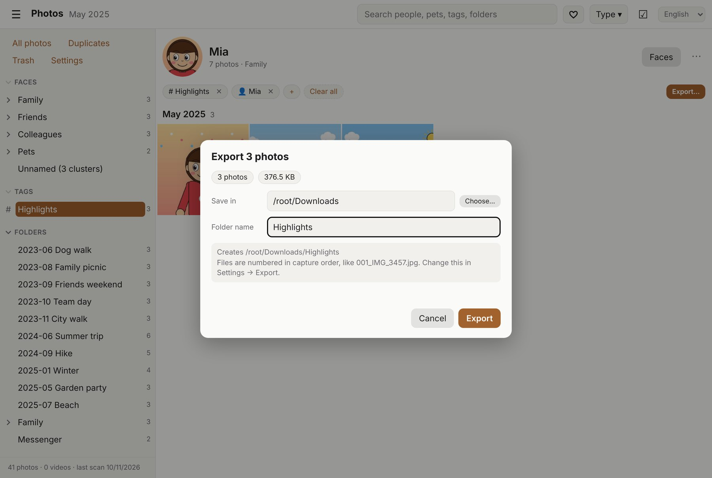
Dates and searching by date
Where a photo sits on the timeline, how to give it a date of your own, and how to find photos by date.
Which date counts
The timeline, its month groups, the Year menu and the search all use one date per photo: the first of these that exists.
- The date you gave the photo (a year, a month or a day), if you did. It wins even over a capture date in the file.
- The capture date in the file (EXIF; for a video, the date in the video).
- The month in the name of the event folder (
2020-07,2020.07,20-07or20.07), shown as the 1st of that month. - The earlier of the file’s created and modified date (a copy gets a new created date but keeps the old modified date).
Only a capture date in the file is the day the photo was taken. Every other date is marked estimated in the Date row of the info panel; a date you gave says manual, and the pencil next to it sets or changes it (see below). Nothing is ever written into a photo: your dates live in shoebox’s index on the drive.
Where a photo lands
A day puts the photo on that day. With only a month it sits in that month’s group, after the photos with an exact day. With only a year it gets a group of its own, named by the year, below January of that year. A small ~ on the photo shows that its date is a guess; point at it to see which kind.
Give a photo a date
Open a photo, press ⓘ and then the pencil at the right end of the Date row (Set date, or Change when you gave it one). Year is required; Month and Day can stay on Not sure. The day list follows the month (February has 28 or 29 days) and stays grey until a month is chosen. A date in the future is refused. Below the fields a preview says where the photo will sit. Save keeps it; Remove estimate (only there when you gave a date) takes it away again.
This works on every photo, also on one with a capture date in its file: a scan, or a photo you took of an old print, carries the day it was made. The file’s own date is not lost; the info panel then shows it in a row called EXIF, and removing your date brings it back as the date.
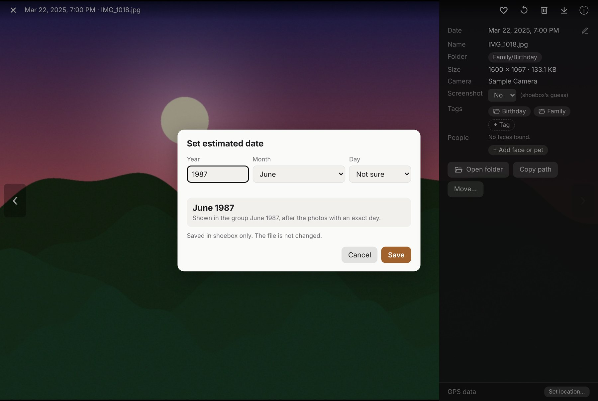
Many photos at once
Press ☑, pick the photos (a whole month or all photos of a folder work too) and press Set date…. If some of them already have a capture date in their file, the dialog says how many (point at the number, or move to the small ⓘ next to it with Tab or tap it, to see which ones); yours is used for them on the timeline. A message with Undo appears afterwards.
Needs a date
When some photos have neither a capture date in their file nor a date of yours, Needs a date appears next to All photos. It lists them (the chip above the list shows the number and a note that the dates shown are only estimates, taken from the folder or the file's created or modified date), so you can work through scans and forwarded pictures; a photo leaves the list as soon as you give it a date.
Search by date
Type a year (1987), a month and a year (June 1987, juni 1987, 6/1987, 1987-06) or a day (14.6.1987, 14 June 1987; numbers with a dot or slash are day, month, year) and pick the row under Date, the last group of the list. It becomes a chip with a calendar and combines with the other chips, for example a person and a year.
A month on its own never offers a date, so June keeps finding tags and people called June. For that, type date: and the month, for example date:june (or datum:): the list then shows only dates and lists that month in every year of your library. date: followed by a year lists the year and its months.
A photo is found when its date lies completely inside what you typed. A photo that only knows its year is found by 1987 but not by June 1987, because it may not be from June; a photo dated by its event folder knows its month, not its day. The suggestions count the photos of one drive at a time.
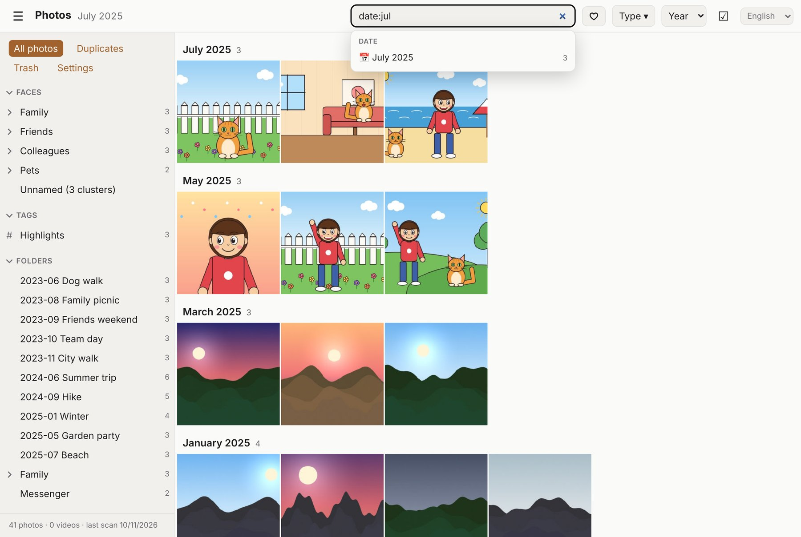
Scanning, duplicates and trash
Bring new photos in, weed out copies, and what happens to what you delete.
Scanning new photos
shoebox does not import photos. Copy or move the photos onto the drive in Finder or File Explorer, which keeps their dates, ideally into a folder named YYYY-MM Event, and press Scan. If the scan finds new files the drive already had, the Control Panel marks them already on the drive and offers Delete the new copies (to the trash, or for good); its list names, next to each copy it deleted, the file it was a duplicate of (point at a cut-off path to see all of it). The older original stays and gets the deleted copy’s folder name as a tag. If the deleted copies were all that was in a folder, shoebox removes that empty folder too and lists it. Settings sets how event folders are named in suggestions (for example YY.MM_Event); existing folders are not renamed and all forms are recognised.
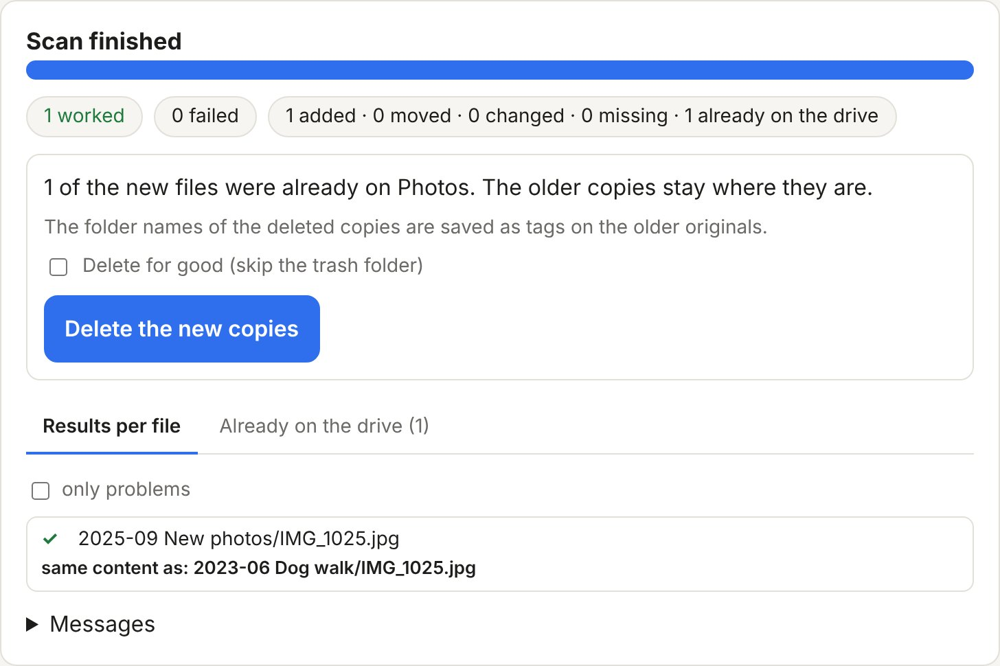
Duplicates
Duplicates lists four kinds: identical (videos too, such as IMG_1 1.MOV next to IMG_1.MOV), same photo with other pixel dimensions or another format (a smaller or re-sent version, or a HEIC and the JPEG made from it), original and edited, and look-alikes. Tick delete this copy on what you want gone; the best file stays.
Shoebox pre-ticks only what it is sure of: identical files and a version with fewer pixels (a HEIC and its JPEG are shown together, but neither is pre-ticked).
Two files in the same format with the same pixel dimensions but different bytes, such as a camera JPEG and a JPEG developed from the RAW (often named like IMG_1 2.jpg), are never pre-ticked: they appear under look-alikes and you choose which to keep (see Keep this one below). Small badges show which file has the most pixels or is the biggest file.
Tags and capture dates of a removed copy carry over. If a removed copy was the last thing in its folder, shoebox removes the empty folder and tells you which one.
With more than one drive, the tab Across drives (in All drives and under Manage drives) lists photos that are on several drives: one picture, one row per copy with the disk name and folder. Tick the copies to remove, or pick a drive and Mark all to tick every copy on it; the last copy of a photo can never be ticked. Move to trash asks first and puts each copy in the trash of its own drive.
Ignore folders. Some folders are on several drives on purpose, for example holiday photos two people share. Type the folder’s name in the field Ignore folders above the list and press Enter (a comma works too): it becomes a chip inside the field. While you type, shoebox suggests folder names from the list with the number of photos each would hide and the drives it is on; arrow keys and Enter pick one, Esc closes the suggestions. Or press Ignore this folder on a copy’s row. A photo with a copy in a folder of that name is left out of the list with all its copies, even when the other drive’s folder has another name, and the line under the field says how many photos are hidden. Remove a chip (✕, or Backspace in the empty field) and they are back. The names are kept in this browser; nothing in your photos or the drives is changed.
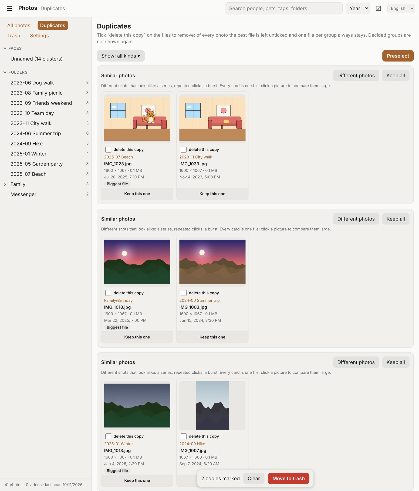


Preselect
Preselect (top right) ticks delete this copy by a rule and brings the groups it ticked to the top, so you see exactly what is marked. Nothing is removed until you press Move to trash and confirm. Every line shows how many files it would tick, and its tooltip says what it does; a line with nothing to tick is not listed.
- Suggested: only what shoebox is sure of: of identical files all but the best one, and smaller versions of a photo. This is also what is ticked when the page opens.
- Identical photos: Copies in the same folder (IMG_1 (2) next to IMG_1; identical files in other folders stay).
- Same photo, different resolution: Smaller versions (every card with a red Fewer pixels badge, also inside look-alike groups; where the copy with fewer pixels is the bigger file, its card says Fewer pixels and the other says Smaller file, both red and unticked, and you decide; click the picture to open it large, press the right arrow key to see the other version with its info panel, and Esc or Space to come back to the group), Keep the HEIC (ticks the JPEG) and Keep the JPEG (ticks the HEIC).
- Original and edited: Edited versions (the originals stay) and Originals (the edits stay).
- Similar photos: Keep the bigger file ticks all others of every group, and Keep the last shot keeps the shot taken last (groups without capture dates are skipped). Look-alikes can be different shots, so look through the groups first.
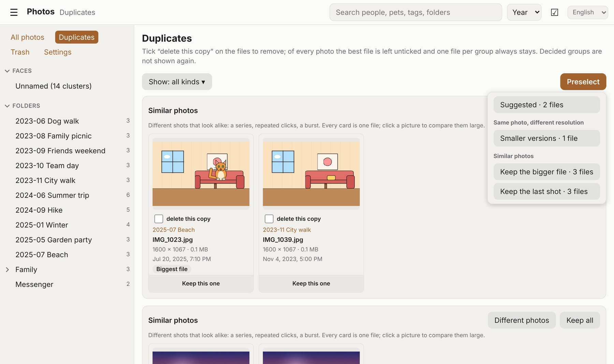
What you can do with duplicates
| Action | What it means |
|---|---|
| Keep all | Nothing is deleted. These files belong together; they show as Versions on each photo. Button at the top right. |
| Different photos | Nothing is deleted. Look-alikes are separate shots, not copies. Button at the top right. |
| Delete this copy | Copy goes to the trash. Tick it on every copy you want gone; the best file stays. Only the ticked file goes: a RAW, Live Photo video, sidecar or other format with the same name next to it stays where it is. |
| Keep this one | Ticks all the others. Look-alikes only: the button at the foot of a card ticks delete this copy on every other file of the group in one click. The same button in the compare dialog (click a picture) ticks the others and closes the dialog. In a group of three or more, to keep several, press Keep (the checkbox button) under each photo you want to stay, then Keep (2), or however many you marked, at the bottom: the dialog closes and every other photo of the group is ticked. Nothing is moved in the dialog; go through your groups, then press Move to trash once in the bar at the bottom of the page. |
Keep all and Different photos are internal notes: shoebox saves them in its own database in .shoebox on the drive, never in the photos. Those finds are not shown to you on the Duplicates screen again. The notes follow the photos if you move or rename them.
Trash
Nothing is deleted right away. Trashed photos wait in .shoebox/trash on the drive. Click photos to select them (Shift-click selects a range; with the mouse you can also drag across them), or use Select all; Only duplicates at the top shows just the copies that went to the trash as duplicates (the number says how many), so Select all and Delete for good cannot touch photos you trashed yourself; the bar at the bottom then has Put back and Delete for good. Deleting for good asks first. Moving photos to the trash from the timeline or the photo view is off by default: switch it on once in Settings (Allow move to trash). If that leaves a folder empty, shoebox removes it and tells you which one; Put back creates the folder again. Deleting copies on the Duplicates screen and with Delete the new copies works either way and also goes to the trash. A copy you put back shows on the Duplicates screen again right away, without a scan.
Badges at the bottom right of a card’s thumbnail show what else went with it: LIVE ▶ for the video of a Live Photo, RAW, or the type of another file of the same name. Point at a badge to see the file’s name and size. A copy deleted on the Duplicates screen or with Delete the new copies has a Duplicate badge: point at it to see which file stayed on the drive, and click it to open that photo, so you can make sure it is safe before you delete the copy for good. If the file that stayed is no longer in the library, the badge is struck through.
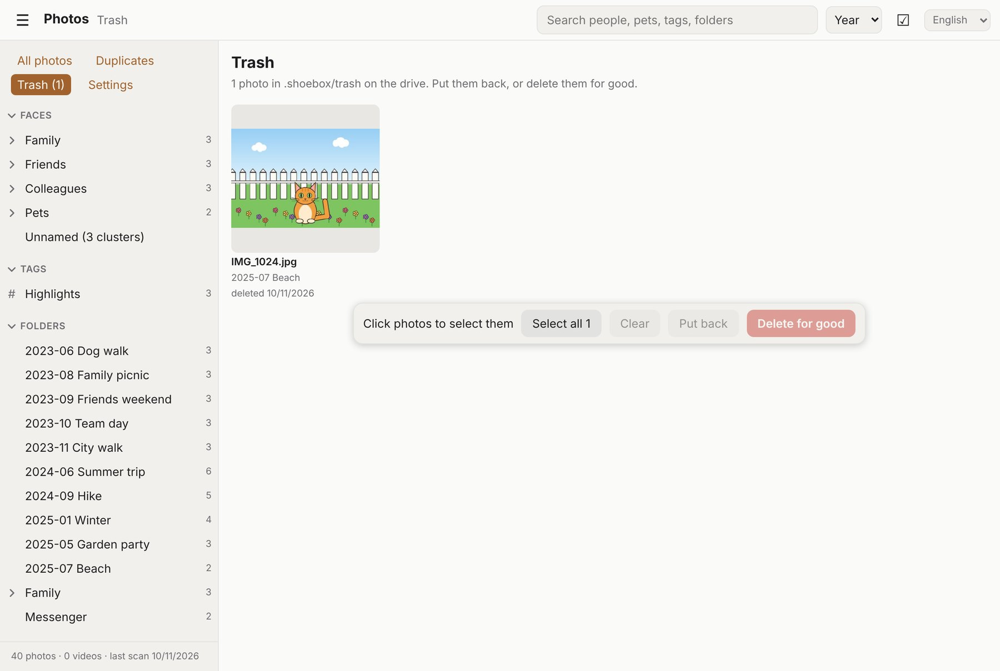
People and pets
Optional: shoebox finds faces, cats and dogs; you give them names.
Find them
Install the add-ons once in the Control Panel (see “Get started in three steps”): Faces, and Pets for cats and dogs. Then run Recognize faces (and Recognize pets) in the Control Panel. A Faces section appears in the sidebar, and “Tag faces, step by step” shows how to name them.
New photos
Recognition does not start by itself after a scan. Click Recognize faces in the Control Panel again; the photo app can stay open. Face recognition only runs on the new photos.
Forgetting what was found
Settings → Data cleanup has a card each for recognized text, faces and pets; the faces and pets cards have two buttons. Delete automatic finds removes the faces (or the cats and dogs) that recognition found, from the drive. Your names, confirmations and drawn boxes are kept, and confirmed faces stay on their photos and with their person, marked not used for matching. Until the photos have been recognized again, Unnamed is empty and nothing is suggested.
Delete everything incl. names also removes what you did: the people you named, confirmed and rejected faces, “not a face” and drawn boxes. That cannot be undone, because the photos hold none of it, so a dialog first says how many there are. Your photos are never touched.
Tag faces, step by step
After Recognize, every face waits for a name. You do not have to name them all.
-
Open Unnamed
In the sidebar, open Faces and then Unnamed. Each card holds faces that look alike, the card with the most matches first. Cats and dogs have cards of their own, with a blue ring and a small round badge in the corner of every face (a cat or a bone for a dog); the menu above the cards chooses People, Pets or both, and shoebox remembers the choice in this browser, also after a reload. A card never mixes faces suggested for two different people: once you have named Mia and Tom, faces that shoebox suggests as Looks like Mia and those it suggests as Looks like Tom are on separate cards. Faces with no suggestion, or only a Maybe, can still go on either. Faces are put on a card only when they look alike as a group, not just each one like the next, so look-alikes (brothers and sisters, cats with a similar coat) get several smaller cards instead of one big mixed one. One person may then have several cards: give them all the same name. The page keeps itself up to date: a face you name in the photo viewer leaves its card at once, without reloading, so you cannot pick it again by mistake. Click a face to see its photo; the left and right arrow keys step through the photos on that card, and Space or Esc closes the viewer. The slider at the right of the menu sets the size of the face circles, from 64 to 150 pixels; shoebox remembers it in this browser. Bigger circles make the cards taller, so fewer fit on the screen.
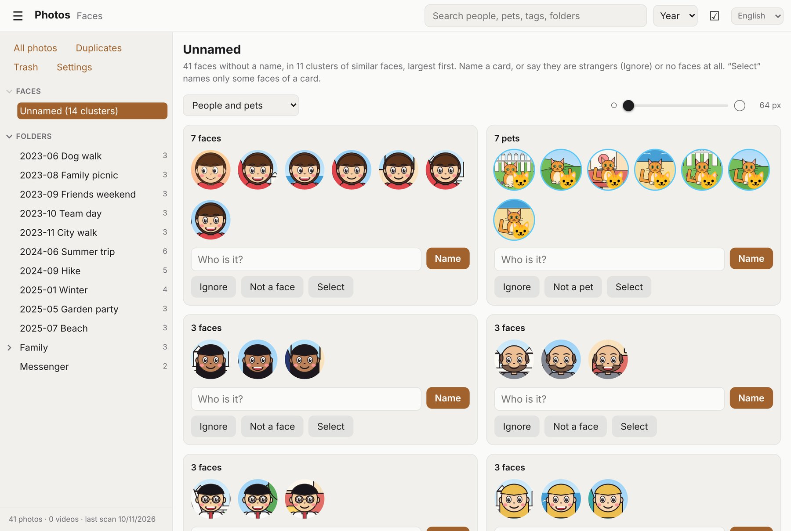
Unnamed: a card for every group of similar faces, with Ignore and Not a face. -
Name a card
Type the name once and press Name: the whole card is named. Click into the field to see the people you named last (Recently used) and those with the most photos, then everyone by group; start typing to pick a person you already have (on a card of pets only cats and dogs are offered, and the other way round), or choose + New person (on a card of pets it reads + New cat, + New dog or + New pet). With the next regrouping (see below) shoebox suggests more faces of them (Looks like Mia): confirm with ✓ or reject with ✗.
Under every card the buttons are icons, in one row at any width: the name field, then four buttons. Point at one and a label tells its name and what it does. The person with a check is Name, the eye with a slash Ignore, the face with a slash Not a face (for pets, a paw with a slash: Not a pet) and the box with a check Select. The same buttons are in the bar that appears when you tick single faces.
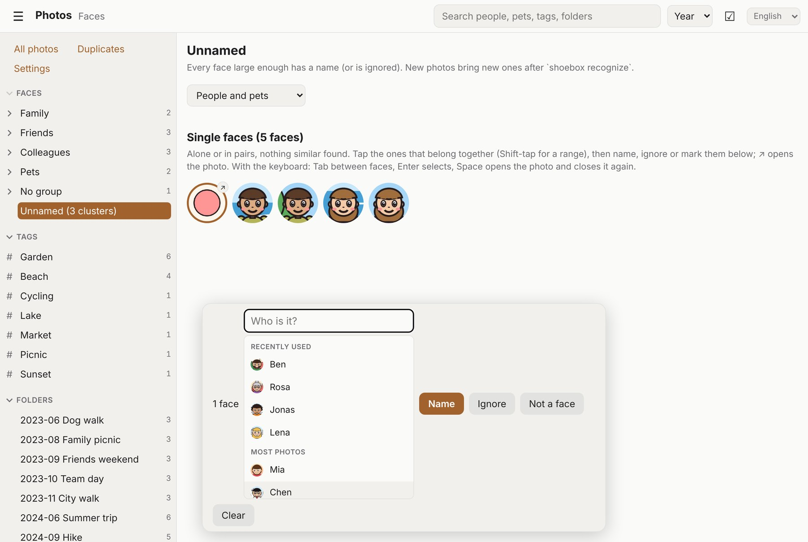
Naming faces: who you named last, then who has the most photos, then everyone by group. The list opens upwards over the page. -
When new suggestions come
Naming never waits: a card you name, ignore or mark as not a face leaves the page at once, and you can go straight on to the next one. Working out new cards and new suggestions takes some seconds on a big library (about 10 seconds with 100,000 photos; only what changed is compared again), so shoebox does it when it pays off, not after every card: after 5 cards, or 30 seconds after your last decision. Each decision starts the 30 seconds again. It also comes after a few seconds when you leave the Unnamed page, when you undo a decision from before the last regrouping, take back a “not this person”, merge two people, when you have dealt with every card that had a suggestion (only if the last round brought some), or when no card is left at all.
While decisions wait, a line at the top right of the page, level with the title, says when: New suggestions after 3 more cards, or in 23 s. The number of cards goes down with each card you name. The small circle to its left is full at first and empties over the 30 seconds; each decision fills it again. While shoebox works the faces out, the line says Finding new suggestions… and the same circle fills up as it gets on. You can keep naming meanwhile; those cards count towards the next round. When it is done, the line goes away and the cards update once. When you scroll down through the cards, the line stays at the top in a small box. There is nothing to press. With reduced motion turned on in your system, the circle moves once a second instead of smoothly.
-
Strangers and false finds
Ignore (the eye with a slash) is for strangers, and for faces in posters, frames and screens. Not a face (the face with a slash; for pets the paw with a slash, Not a pet) is for false finds that are no face at all. Shoebox only finds cats and dogs, so an animal of another kind (a goat, say) is a false find: use Not a pet. A cat or dog that belongs to someone else is a stranger: Ignore (the ⋯ menu says Ignore (someone else's pet)). Nothing is deleted and no photo is touched; shoebox only notes the decision in its own database.
Sometimes the detector takes a cat for a dog, or the other way round, and then only names of the wrong kind are offered. Tick the pet or pets (Select) and press the cat (It's a cat, not a dog) or the bone (It's a dog, not a cat), or choose the same entry from ⋯ on the pet in a photo's info panel. The pet keeps the decisions already made about it and is a cat from then on in the name list, the icon and the search.
-
Only some faces of a card
Select lets you tick the faces yourself. The buttons then work on those only: Name 2, Ignore 2, 2 not a face (point at a button to see it). The top of the card says how many faces are selected, and until you tick a face the buttons are dimmed. Use it when a card mixes two people. While it is on, the same button is called Clear; press it to stop selecting and clear the selection.
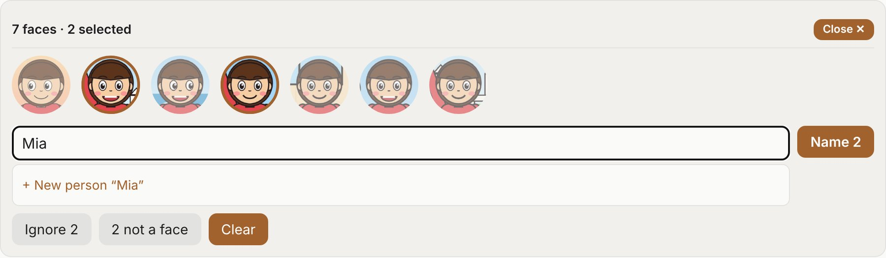
Select: two faces ticked on a card.
Several faces in a photo, and groups
Tick faces in the viewer. Sort people into groups such as Family, Friends and Colleagues.
In a photo
Open a photo and its info panel (ⓘ). Under Faces the people already named sit side by side, each with their picture and first name (two with the same first name get the initial of their last name, “Anna M.”); point at one to see the whole name and the box around their face, click to see all their photos, and the ⋯ in the corner of the picture has the rest (Not …, Name someone else…, Use as …’s picture, Ignore (a stranger)). Below a line, under Needs a decision, every face still waiting has a row: a suggestion with ✓ and ✗ and Other for someone else, or + Name. Faces you ignored stay out of the way: 2 ignored at the right shows them as dimmed rows (to name one after all, or to take the decision back with ⋯), Hide ignored folds them away again. The three small icon buttons at the bottom (point at one to see its name) are the frame with an eye (Show boxes), the checkbox (Select, shown only while at least two faces need a decision) and the face with a plus (Add face or pet).
Select turns the list into a checklist: tick several faces (All unnamed ticks every face nobody has named; Shift-click ticks a range, and with the mouse you can also hold the button down and drag over the rows), then Ignore (the eye with a slash) or Not a face (the face with a slash) for all of them at once.
Add face or pet draws a box around a face or pet that was missed. Say what it is first, Person, Cat or Dog, then name it: the list opens at once with the names of that kind you gave last (Recently used) and those with the most photos, and offers only names of that kind (no people when you name a cat); + New person, + New cat or + New dog adds a new one. The kind of a pet you drew yourself cannot be changed later; delete the box and draw it again. For a pet the detector found, ⋯ offers It's a cat, not a dog (or the other way round) when it took it for the wrong one. With the keyboard: the dialog opens in the name field; Shift+Tab goes back to the kind, and the arrow keys change it. In the name field the arrow keys go through the list and Enter takes the name; Esc closes the list, a second Esc the dialog.
Videos are not scanned for faces, so their info panel says so. There you can still link a person: The same Add face or pet button opens the same dialog (Person, Cat or Dog, then the name); there is no box to draw, shoebox places the small one it needs by itself, and nothing is drawn on the video. The person or pet is linked to the whole clip. Their profile picture shows in the list, and the video is found when you filter the timeline by that person.
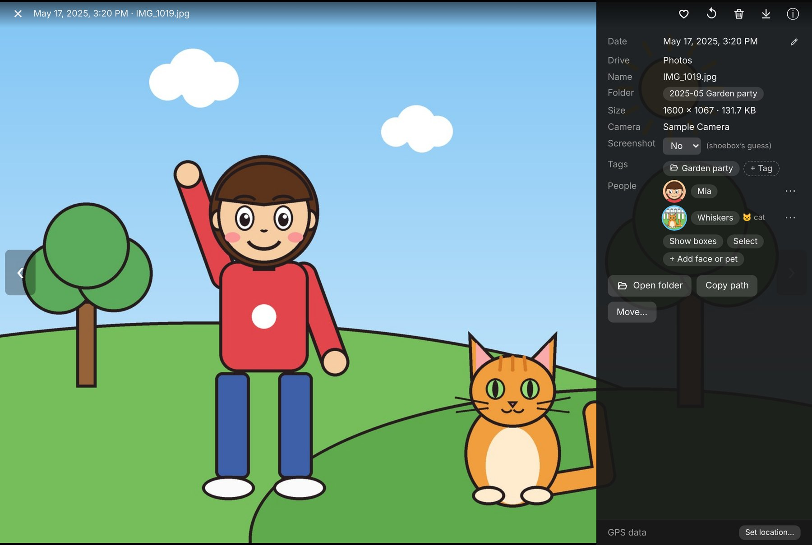
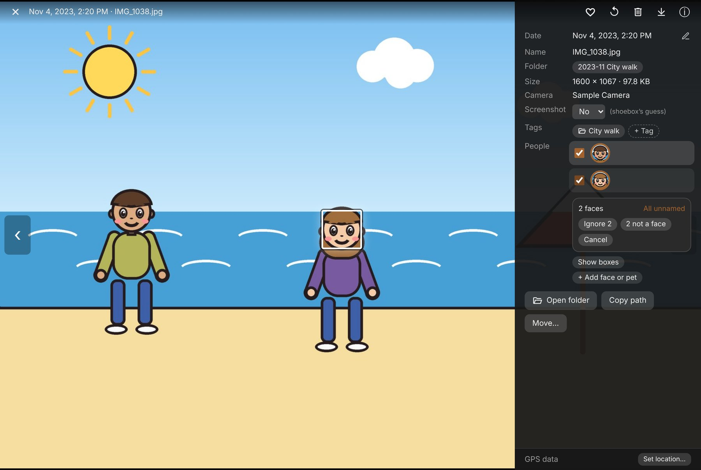
Groups
Faces shows people by group; click a group’s title (or its arrow) to fold its people away, so a long page shrinks to one line per group, and again to unfold. All groups start open. A group is always made from a person: use ⋯ on them, then New group…, and they are its first member. A group is never empty, so it is removed when its last person leaves it. Groups… renames, reorders and deletes groups; to reorder, drag a row by the dotted handle on its left (or focus the handle and press Alt+↑/↓). A person is in one group at most, and deleting a group deletes nobody.
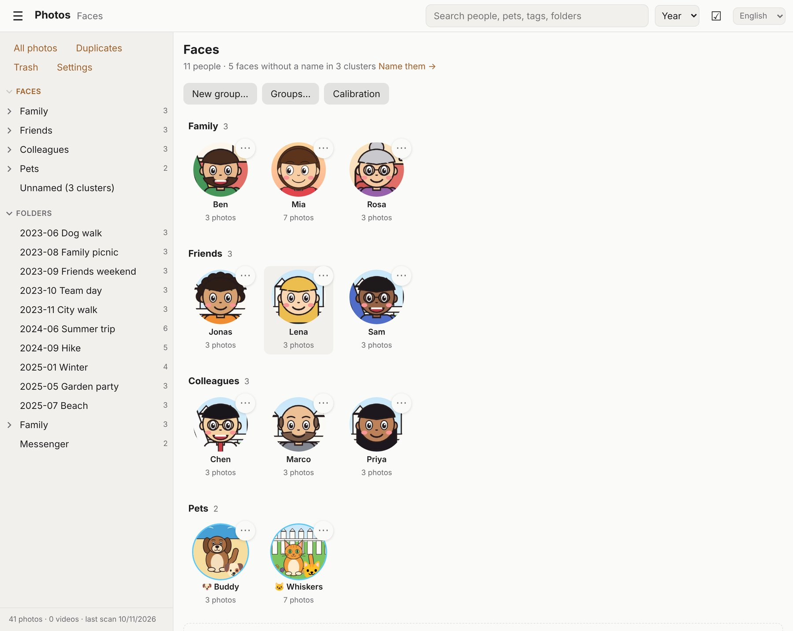
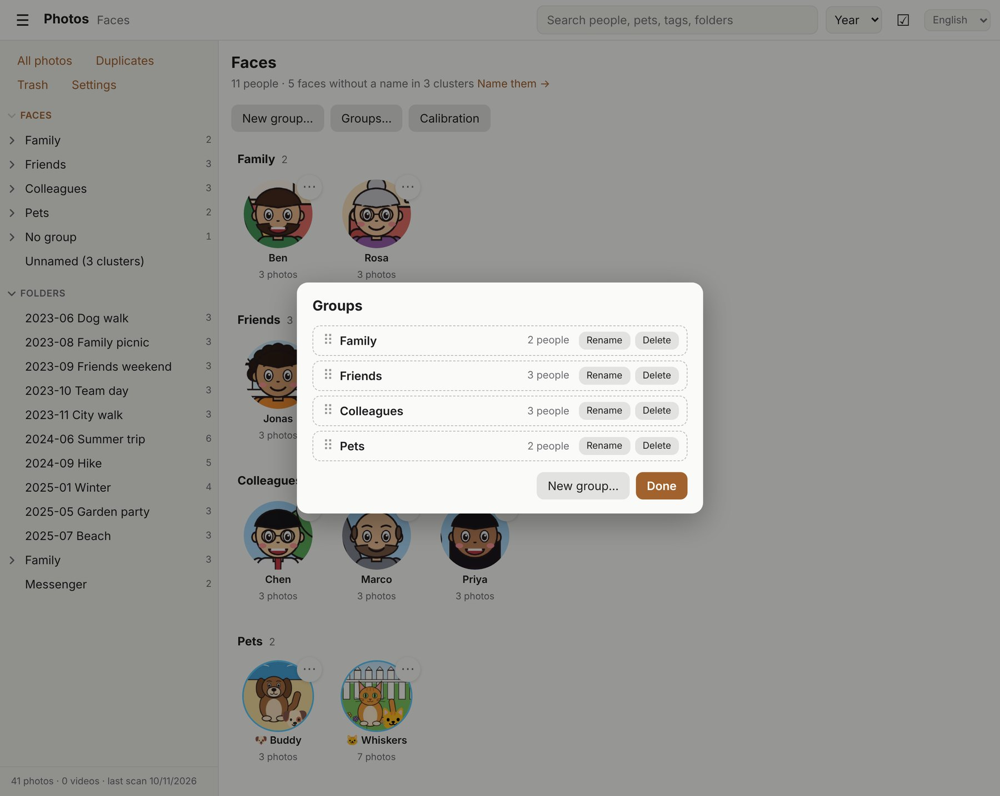
Put people into groups
Use ⋯ on a person, then Move to group… (or New group… for a new one), or drag the person onto a group in the sidebar. Pets work the same way: a group Pets can hold the dog and the cat.
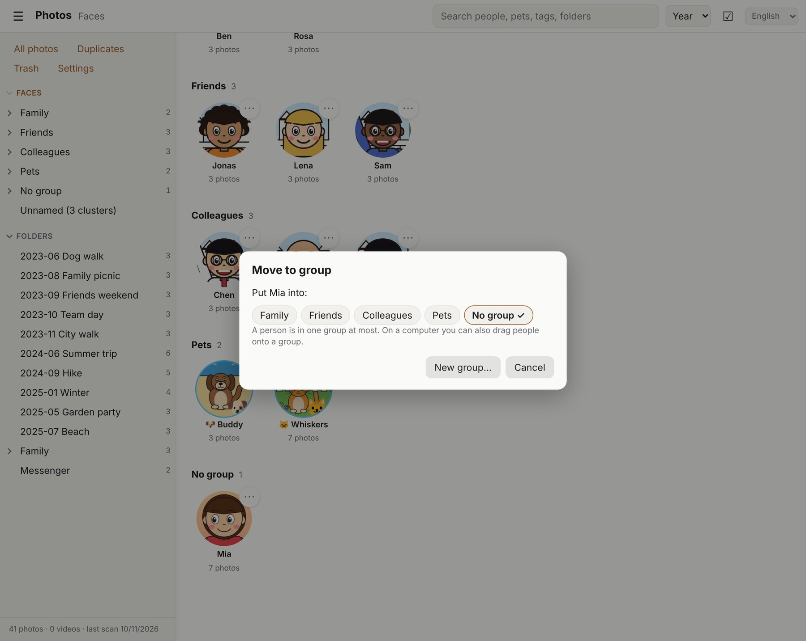
See a whole group at once
Click a group in the sidebar: it unfolds its people and the photos show everyone in it, so a photo of Rosa and a photo of Ben both appear, not only the photos with both of them. Or type the group’s name in the search box and pick it under Groups; it becomes a chip with the group symbol. Pets in the group count too. Add a person next to it to narrow it down again.

Corrections
The same ⋯ menu has Merge into… for two cards of one person. Above a person’s photos, Check … faces (or Faces when there is nothing to check) opens their faces page with the tabs Confirmed, Suggested, Maybe and Not them, and a face marked by mistake can go back with ↺. The Select and Confirm all shown buttons stay at the top while you scroll. Once every face shown has been decided, the next ones come without Show more. With Select on, click faces or drag a rectangle over them with the mouse (Shift-click for a range). Dragging works the same wherever faces or deleted photos are selected: Unnamed cards and single faces, Face check and Pet check, the trash; the bar at the bottom has Select all, a ✓ to confirm the chosen faces and Not …. On Confirmed it has Not …, Name… (the person with a plus: they are someone else), Ignore (the eye with a slash) and Not a face (the face with a slash; for a pet the paw with a slash, Not a pet), the same icons as on Unnamed; point at one to see its name. Ignore is for someone you do not want to keep: the faces are no longer theirs and do not come back to Unnamed, while Not … only says it is not them, so the faces are offered again. In Suggested and Maybe, click a face to see its photo; the arrow keys then step through the faces still to check. A face you decide in the photo’s info panel has left the list when you close the photo. Calibration (Face check, Pet check) shows what recognition found: small faces, scores and false finds.
Keep all and Different photos are internal notes: shoebox saves them in its own database in .shoebox on the drive, never in the photos. Those finds are not shown to you on the Duplicates screen again. The notes follow the photos if you move or rename them. Hover over the buttons for a short explanation: Different photos says the files are separate shots, Keep all links them as versions of one photo.
Locations and maps
Optional: where your photos were taken, on a map. Off until you turn it on.
Turn maps on
Open Settings and tick Show maps (OpenStreetMap). The maps are drawn in your browser from OpenStreetMap, so this is the one place where shoebox needs the internet: OpenStreetMap sees which parts of the map you look at, never your photos or their names. shoebox saves no map pictures on the drive (your browser may keep some in its own cache). With the box unticked nothing is ever loaded from the internet. The setting is the same for all your drives: you tick it once, and it stays on when you switch to another drive. It is remembered by your browser, so another browser starts with maps off.
In a photo’s info
Where the file has GPS data, GPS data in the info panel shows the position and, with maps on, a small square map with a pin on it, fixed to the bottom of the panel. Without internet the map says Offline instead. A photo without GPS data shows no map at all, only the heading with a Set location… button.
Give a photo a location
Set location… (right next to the heading GPS data) opens a dialog with a map and two fields, latitude and longitude, which are always both there and follow each other: click the map to place the pin, or type the numbers (a point or a comma both work; latitude −90 to 90, longitude −180 to 180, anything else is refused). With maps off, only the fields work. The location is saved in shoebox only: the photo file is not changed, and it stays with the photo if you move it. A location you gave can be changed or removed again; a location that is in the file itself is never changed.
To give several photos the same location, select them and press Set location… in the bar at the bottom. It opens the same dialog as for one photo (with maps off, only the fields). The dialog says how many of them have a location in their file (they keep it) and how many have one you set before (it is replaced). Point at a number, or move to the small ⓘ next to it with Tab or tap it, to see which photos it means.
The Locations page
With maps on, Locations appears in the sidebar below Folders. It opens a world map with a pin for every photo that has a location; pins close together are grouped into a number and split apart as you zoom in. Click a pin or a group and the screen splits: the map on the left, the photos from there on the right, like the timeline. Click a photo to view it; the arrow at the top of the list folds it away.
Places
A place is a named area, like “Home” or “Island XY”. Press New place, click two opposite corners on the map and give it a name: every photo with a location inside the area belongs to it, now and later. Places are listed under Locations in the sidebar with their number of photos; click one to see its photos.
You can also search for a place by name. If the search is empty, picking a place opens it on the map, like a click in the sidebar (a Type filter is dropped then, as on every click in the sidebar). If the search already has chips (a folder, tag, person, pet, favorites ♥), the place joins them as a chip with the map marker () and you stay in the timeline: all chips must match, so “Home” + “Anna” shows Anna’s photos taken at home. A second place replaces the first. The marker on the chip shows the place on the map when you click it, and a place chosen on the map goes along when you add another chip.
In the list on the right, Show in the timeline (four squares) closes the map and shows all photos of the place in the timeline, as a place chip you can combine with other chips. You can also Rename a place, Draw area again or delete it; only the place goes, never a photo or its location.
Places and the locations you set are written to userdata.json next to the index on the drive, together with your tags and people.
Words in photos
Optional: find photos by the words written in them, such as a letter, a screenshot or a street sign. Needs the Text add-on.
Read the words
In the Control Panel, tick Text in step 1, press Install the selected add-ons, then pick your drive and press Recognize text (see “Get started in three steps”). It reads German and English letters, only reads (no photo is changed) and is slow, about a second per photo on a recent computer (50,000 photos take half a day, an older Mac a day or two): start it in the evening.
It reads screenshots and photos without camera data first, because that is where most text is, and it continues where it stopped if you cancel. After a scan, press it again to read the new photos.
The status line at the bottom of the photo app says text: N to read while photos are waiting. Recognition stats in the Control Panel shows how far faces, pets and text have come (in a terminal: shoebox stats).
Search the words
Type a word in the search box and pick the group Recognized text in the suggestions, or type text: first (text:Rechnung) to look only there. The number next to it is how many photos have the word; when none has it, the group is left out (after text: a line says so, and name: does the same for file names). It becomes a chip with a scanner icon, and the photos shown carry a small badge with the line that matched (point at it to read the whole line).
Case, accents and ß do not matter (strasse finds Straße), and a search with several words needs all of them in the same photo. It combines with every other chip, for example the text Rechnung in one year or of one person, and it works in All drives. File names are searched with name:, see “Find and organise”.
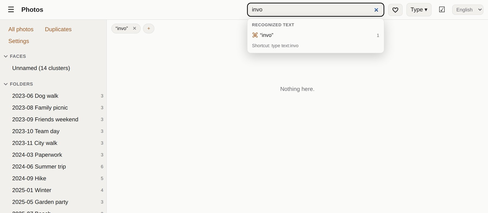
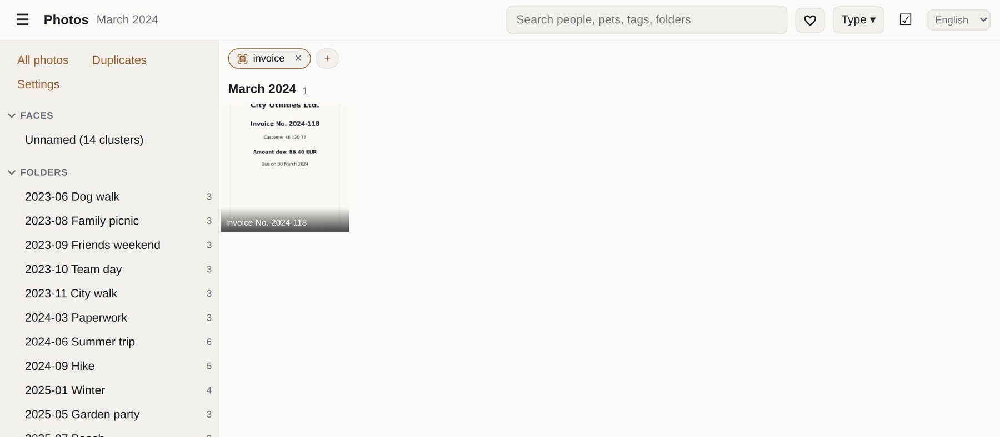
Only what the program is sure of
Reading is not perfect, and tiny print is left out on purpose. Settings → Calibration → Text check shows what counts and what is left out, with the part of the photo cut out next to each line; two sliders (Confidence at least, Height at least) move the limits, and Back to the defaults resets them.
In the viewer
On a photo that has recognized text, a scanner button appears in the top bar next to the ♥, dimmed; photos without text do not show it. Press it, or the key w (for words): the lines are outlined on the photo and a section Recognized text opens in the info panel, a list that scrolls when there are many lines, with Copy all at the right end of its header. Pressing the button again removes the outlines and folds the list; a click on the header only folds or unfolds the list. After a text search the outlines are on by themselves and the words you searched for are marked. The ✕ beside a line hides it from the search (for text you do not want found); Show again brings it back.
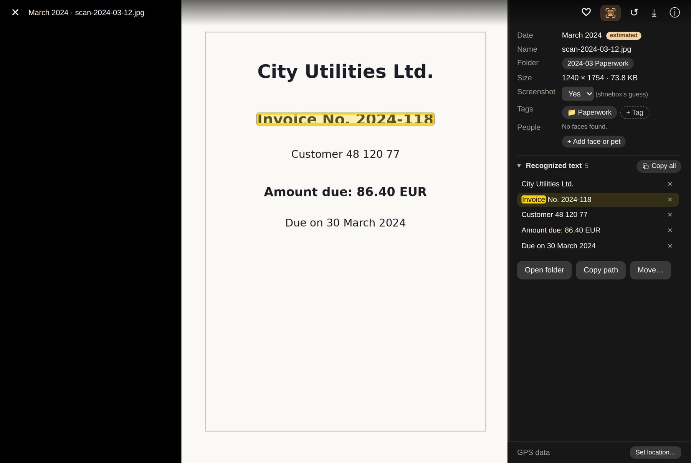
Forgetting the text
Documents can hold names and numbers. Settings → Data cleanup → Recognized text → Delete all recognized text removes every word that was read from this drive. Photos are not touched, hidden lines stay hidden, and Recognize text reads them again if you want. In a terminal, shoebox text stats prints how many photos were read and how many lines are kept (--json for scripts).
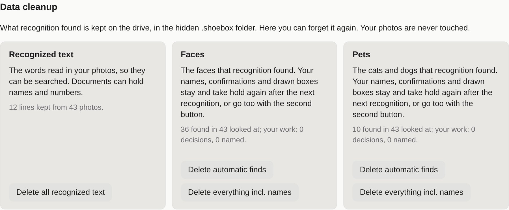
Drives, backups and the iPad
Several drives
Start shoebox with more than one drive and each one appears in the sidebar. All drives gives you one common timeline across all of them. It is for looking: photos that are favorites show a ♥ (greyed out, you cannot click it), photos you hid on a drive are left out (the Hidden chip shows them, with a greyed-out eye), and the info panel shows tags, favorite and people, but none of it can be changed there (Show boxes and pointing at a person to see their face still work). The panel names the drive the photo is on (its disk name, as in Manage drives) and has Show in Finder (Show in Explorer on Windows) and Copy path; Open in <drive>'s timeline switches to that drive's own timeline, at the photo's folder, to change tags, people or favorites.
A photo that is on more than one drive, with the same file name and the same content (in any folder), shows only once in All drives, and the numbers in the search suggestions count it once; the status line at the bottom says how many copies are hidden. The copy shown is the one whose date you corrected or estimated (the one changed last, if several have one), otherwise the one on the drive that comes first in the sidebar; a ♥ on any copy shows on it, and with chips the copy that fits them is shown. The info panel lists the other copies under Also on with disk name and folder; click one to open that folder on its drive. A copy with another name, and a file shoebox has not finished checking after a scan, show as photos of their own; Duplicates across drives lists every copy. Nothing is deleted or changed: each drive keeps all its files, and its own timeline shows them all.
Manage drives, next to Duplicates, Trash and Settings, opens a page that does not depend on the drive you are looking at: your drives as cards, and two tabs below them, People across drives and Duplicates across drives. A drive that is unplugged is shown as offline.
Under People across drives each person shows the drives they are on by disk name with the number of faces found there (point at one to see its folder), and the people who are on the most drives come first. The drive you are looking at is filled in with the accent colour, and so is the page you have open under it (All photos, Duplicates, Trash, Settings), so you can always see which drive's trash you are in.
Carry over data
You scanned a drive again, or copied its photos to a new one, and the tags, hearts and people you made are missing there? On Manage drives a drive that has such data on another drive shows a line and the button Carry over data…. Choose where it comes from (From) and tick what to bring: Tags, Hearts, People, Dates (dates you corrected or estimated) Places (places you gave by hand) and Hidden (photos and folders you hid from the timeline; folders are matched by their path, and this box is not ticked at first because what to hide is decided per drive). Each box shows how many photos it concerns; one with nothing to carry is greyed out.
Photos are matched by their content, not by their path, so a photo that was renamed or sits in another folder is still found. Only photos on both drives take part. Folder tags are not carried (the new drive has its own folders), people are matched by name, and faces you already decided on the target drive stay as you decided them. What the target drive already has always stays: nothing is overwritten and nothing is deleted. You can repeat it safely.
The other drive is only read and no photo is touched; the data is written into this drive's index only. Do it before you erase the source drive: afterwards its data is gone. Backups are not changed by this. After an export onto another shoebox drive, the result says the same.
From a file. When the other drive is gone or erased, or this drive lost its index, the data can come from a userdata.json instead (see “Your tags and names are saved” below). Under From choose A file (userdata.json)… and pick the file in this computer's folders: every drive keeps one in its .shoebox folder, and a copy you kept somewhere else works the same. The dialog says when the file was written. With only one drive, the same button is in Settings → Carry over data. The file is only read and the same rules apply. Choosing a file works only in a browser on this computer, not on the iPad.
Original and backup drives
On the Manage drives page every drive is a card with its disk name and the folder on it (for example Extreme SSD · /Photos). Say what each drive is with the menu in the card: Original drive or Backup drive. shoebox suggests a backup when almost everything on a drive is on another one, until you decide.
A backup has a blue outline, sits right after its original and says Backup of disk name and Not in common timeline. It shows how much of the original is on the backup, and two lists: files different on the backup (the same path with other content, for example after an edit) and files only on the backup. The original's card has the third list, files not on the backup yet.
All lists start folded; open one to see its files, and the folder icon next to a file shows it in Finder (Explorer on Windows). Every list has a Show photos › button. For only on the backup and not on the backup yet it opens that drive's own timeline with a filter chip, Only on backup or Only on original; for different on the backup it opens a timeline of both drives with an Original and a Backup badge on every photo, the two versions of a photo side by side.
The chip works like any other: the search (file names, tags, people) and the other filters narrow it down, ✕ removes it, and typing only on or backup offers it. When you pick a drive it does not fit (an original drive for Only on backup, All drives), the chip is removed and a note says why.
In the photo's info panel a badge next to the name says Only on backup or Not backed up; point at it for the explanation.
The bar at the bottom of a card says when the drive was last scanned and when new files last arrived on it (on a backup: Last backup); point at a date for the exact time.
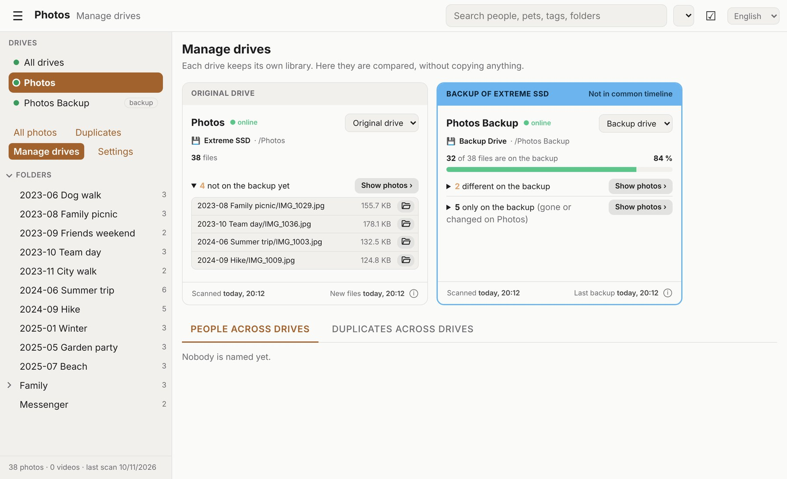
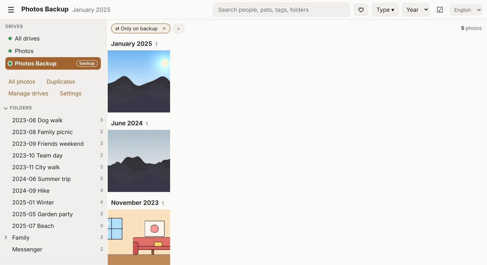
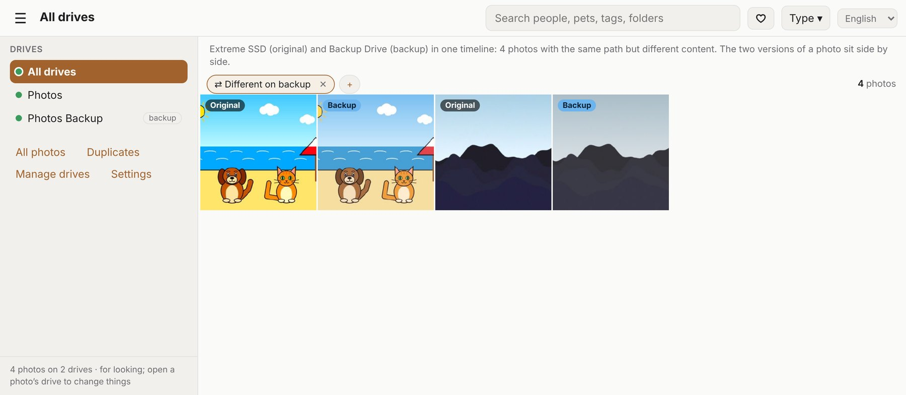
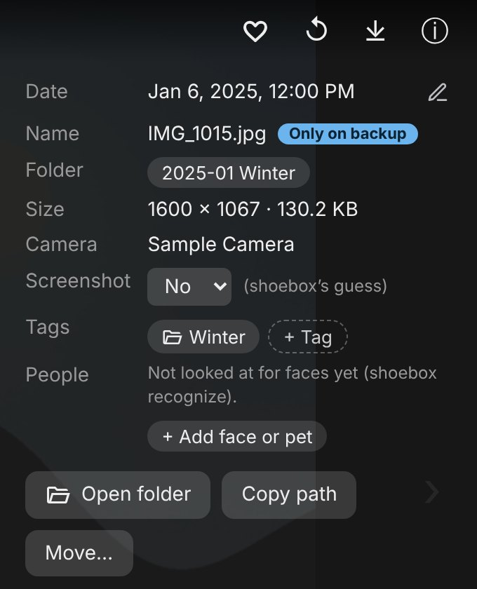
Backup check
Choose the original first and the backup second. shoebox compares the two indexes (no photo is read) and lists what is not on the backup yet, what differs and what exists only on the backup. Also re-read the backup finds bit rot.
Your tags and names are saved
Everything you add yourself (own tags, hidden photos and folders, people, groups, your ✓ and ✗ decisions, drawn faces) is kept in the index, never in a photo. While you work, shoebox also keeps a safety copy of the index, library.db.bak, and a readable list of it all, userdata.json, in the .shoebox folder on the drive. They travel with the drive, so a backup of the drive has them too. Open userdata.json in any text editor to see what you have made. If the index is ever damaged, Verify in the launcher points you to the safety copy. If it is lost, scan the drive again and use Carry over data with its userdata.json to bring your tags, hearts, people, dates and places back. Copy the file somewhere else first: shoebox writes it anew after your next change.
iPad & other devices
In Terminal: shoebox serve /Volumes/MyDrive --lan. It prints an address and a PIN; open the address in Safari on the same Wi-Fi and enter the PIN once. Swipe in the viewer, tap to select.
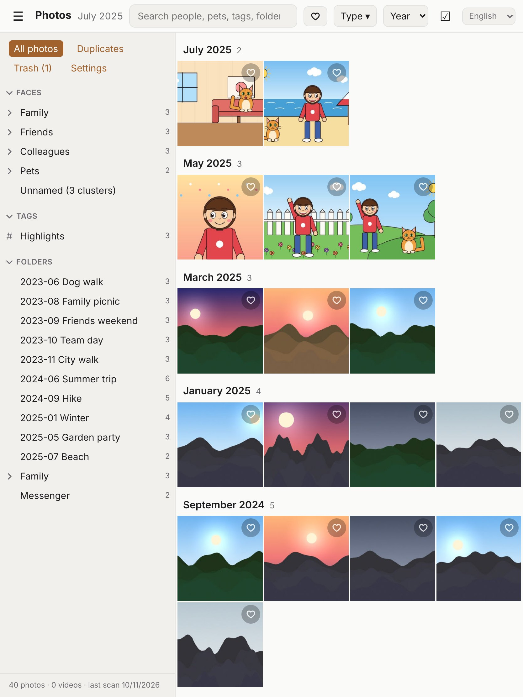
Command line (optional)
shoebox scan <folder>- index new, moved and changed files
shoebox scan <folder> --index-next-to-program [--name <name>]- scan a folder you only want to read, for example on a server: nothing is written into it, its index is kept next to the program
shoebox libraries- list the libraries kept next to the program (
--jsonfor scripts);add <folder>,rename <name> <new>,root <name> <new folder>(the share moved),remove <name>anddelete <name> --yes(deletes its index) do the same as the Control Panel’s tabs shoebox verify <folder>- re-read files and compare with the index
shoebox recognize <folder> [--pets] [--text]- find faces (and pets, and with
--textread the words in the photos;--text-onlyreads only the words) shoebox backup <original> <backup>- is the backup complete?
shoebox serve <folder> [--lan] [--pin …]- open the photo app
Your photos are safe
The design rule is simple: shoebox reads your originals and never writes anything into them.
-
Read-only
Metadata, thumbnails, tags, locations and dates you set are kept in the index on the drive (
.shoebox/library.db), never inside a photo. Capture dates and created dates never change: a date you give a photo lives in shoebox only, and the file’s own date stays as it was. A folder whose index is kept next to the program is only read: nothing at all is written into it, and its photos cannot be moved, renamed or deleted. -
Guarded
Every scan is checked: size, dates and a full hash before and after. Any difference is an error.
-
Only on your command
Originals change only through your actions: move, rename, trash. Always a rename, never a copy, and only if the file still matches the index. The only other thing shoebox removes is a new copy of a file the drive already had, and only when you press the button after a scan. Export only reads your originals. Carry over data reads another drive’s index, or a
userdata.jsonyou choose, and writes only this drive’s index. -
Local
No cloud, no account. By default only this computer can connect; other devices need
--lanand a PIN. The one exception is the optional maps (Settings, off by default): your browser then loads map pictures from OpenStreetMap. The recognition add-ons run only from the shoebox folder you started, never from a drive’s hidden.shoeboxfolder. -
What was found, you can forget
Words, faces and pets found in your photos are kept on the drive, in
.shoebox/recognition.db, never in a photo, and you can delete them again: see “Forgetting what was found” and “Forgetting the text”.
If something looks off
The grid is empty. Run Scan in the Control Panel first, then start the photo app.
New photos are missing. Scan again. It is quick: only new and changed files are read.
A video has no preview. Run Scan (on a Mac it makes previews for every video QuickTime can play), or scroll to the video in the photo app: your browser makes one the first time it is on screen. If it stays empty, neither can read that video; add ffmpeg (see “Good to know”), then run Scan.
The iPad cannot connect. Same Wi-Fi? Started with --lan? Enter the PIN printed in Terminal (on Windows: the black window). Restarting shoebox asks for the PIN again.
There is no Export button. Export saves into the folders of the computer shoebox runs on, so it is only offered in a browser on that computer, not on an iPad. With a tag in the search the button sits next to the tag’s chip; for other photos press ☑, select, and use Export… in the bar.
macOS says “libheif.1.dylib” (or “shoebox”) cannot be opened because Apple cannot check it for malicious software. shoebox was started directly, not with Start shoebox.command. Press OK and double-click Start shoebox.command instead: it takes the download mark off the files in program, then starts shoebox.
A drive shows as offline. Plug it in again; shoebox picks it up when you reload.
My photos are on a server. Add the folder in the tab Add a folder or server in step 2 of the Control Panel and keep its index next to the program (see “Get started in three steps”). The server is only read.
“Separate (next to the program)” cannot be chosen. shoebox has to make its folder libraries in the shoebox folder, next to program, which is not allowed in a folder like Program Files. Move the shoebox folder to Documents or the Desktop.
shoebox says the list of libraries cannot be read. The file libraries/libraries.json, next to the program folder, is damaged. shoebox then stops scanning, opening and changing anything until it is mended, so that a folder kept next to the program is never scanned into a .shoebox folder of its own. Fix the file or move it away (the indexes in libraries stay), then add the libraries again in the tab Add a folder or server with the same names.
A photo is in the wrong place on the timeline. Its date comes from the file, the name of its event folder or the file’s dates, and a scan or a picture sent through a messenger often has the wrong one. Open the info panel and press the pencil next to the date to give it your own; see “Dates and searching by date”.
A video with the same name as a photo is shown on its own. A photo and a video are one Live Photo only if they have the same name, sit in the same folder and were taken at the same moment. A camera’s IMG_0139.JPG next to a phone’s IMG_0139.MOV from another day stays a photo and a video: LIVE ▶ is not offered, and moving or deleting one leaves the other where it is.
A map is empty or says Offline. Maps need the internet. Check the connection and open the photo again; without it everything else works as before.